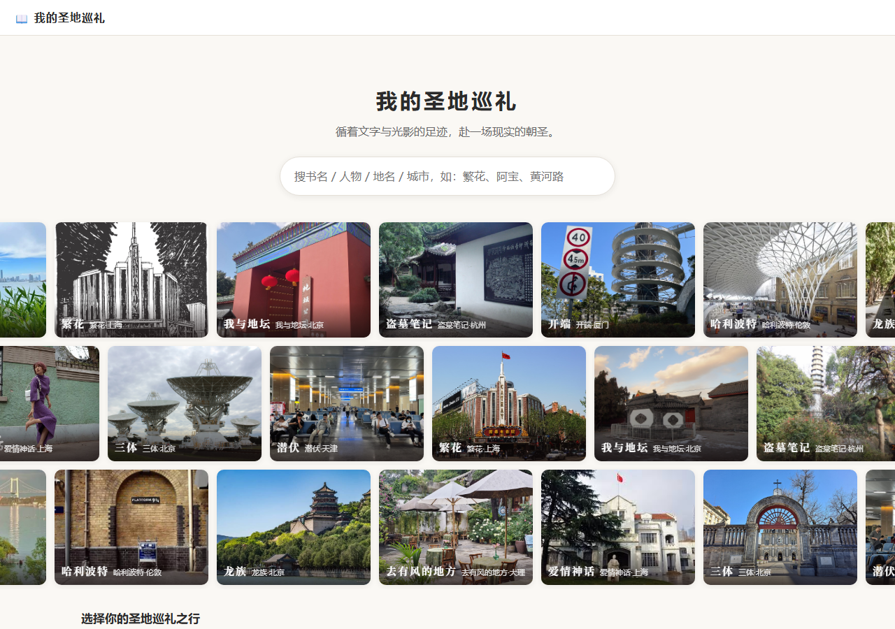

知道"这里曾是故事的发生地"，就想去走一走、拍一张照，
让虚构的故事在现实里落地 —— 一个从作品出发的巡礼行程规划工具
"圣地巡礼"是内容驱动型用户的自发行为——打卡取景地、参观主题展览、重游角色旅途，寻找与文艺作品的真实连接。《繁花》带火黄河路，《开端》让厦门成为"循环之城"……在日本它已是成熟文化，在国内，它正在成为IP与现实之间新的连接方式。
真正规划行程时，"我想去"和"我去得了"之间隔着四件事——用户缺的不是攻略信息，而是把情怀翻译成行程的那一步。
书里的地点要从文字里寻找，影视取景地要逐条核对，互联网信息要多方比较才可信，人工找点费时费力。
打卡点确定后，路线规划缺少高效工具，同时错过附近名胜也颇为可惜。
对游览时间缺少参考，计划与实际不符，不得不忍痛删减心仪的目的地。
从攻略到出发之间，还有购票预约等关卡，过程琐碎耗时。
把圣地巡礼从"手工考古"变成"一键成行"：选作品 → 选巡礼点/景点 → 自动规划路线与时间 → 衔接携程预订酒店门票。
二次元爱好者、影迷、剧迷、文学读者等爱好者，自发为一部作品奔赴一座城。
现象级话题作品的舆论参与者、偏好历史人文主题游的文化旅行者，以及想给常规城市游"加一个主题"的轻度用户。
打通"种草 → 规划 → 预订"链路，减少用户决策时间；一次考据长期复用，一部作品沉淀为一条可持续运营的巡礼产品线。
向下滚动，或点击左侧任意步骤 —— 右侧真机截图同步切换。
首页支持按城市、人物、地名三种方式浏览作品线路，也可以直接搜索书名、人物或地点，实时联想。滚动 IP 墙，或点选下方的城市分组卡片——目前仓库已有 8 条线路、130 多个考据点位。
从 IP 墙下方的城市分组卡片进入"全部线路"页：上海有《繁花》《爱情神话》，北京有《三体》《龙族》《我与地坛》，伦敦有《哈利波特》……按城市浏览，点进任意一条，考据点位直接上地图。
搜选"繁花·上海"，黄河路、进贤路、国泰电影院这些考据过的点位直接出现在地图上。每个巡礼点包含坐标、片区、引文、出处、停留时长、机位贴士，无需翻阅任何攻略。
规划页支持输入出行日期区间和每天可用时长，勾选打卡地点与附近名胜，中途可点击卡片了解目的地信息。巡礼点与城市名胜进同一张行程单，"专程巡礼"与"顺路旅游"两不误。
时间装不下时，弹出建议舍弃清单，每个被砍的点都附算术理由和"能省多久"；用户可勾选保留或放弃，系统实时重算；时间有富余则反过来主动推荐追加景点。最终行程决定权由用户所有。
输入完毕点击生成行程，引擎自动计算逐日、逐时刻的路线。"装得下 / 装不下"是可计算的问题，不是 AI 玄学。
地图上点击任意巡礼点，悬浮卡展示情节、原文引用与出处、机位贴士——引文逐字来自原著/剧集并标注出处，正是巡礼者最想要的那一下心跳。
详情页沉淀完整考据：坐标、片区、原文引文与出处章节、停留时长建议、拍摄机位。点位库逐点经过内容组人工考据，绝不"AI 编故事"。
日程视图把引擎结果逐日排开：每天几点出发、先到哪、停留多久，清清楚楚。
行程页支持一键生成文字版/图片行程单，可保存分享；同时设置按钮直接跳转携程完成酒店、门票预订，实现从巡礼规划到实际出行的闭环。

点位库逐点经过内容组成员考据，引文必须逐字来自原著/剧集并标注出处，保证巡礼内容的可信度。
引擎将巡礼规划建模为带时间硬约束的多日协同优化问题：片区聚类后以最近邻 + 2-opt 逼近路线最优，按每日可用时长做排程，复用性强。国内外影视 / 严肃文学 / 网文等作品通用。
按地点重要度、片区距离、可用时间动态取舍，并把理由摊开给用户看；时间有富余则主动建议追加。
| 题材 | 代表线路 |
|---|---|
| 电视剧 | 繁花·上海 / 开端·厦门 / 去有风的地方·大理 / 潜伏·天津 |
| 网文 / 科幻 | 盗墓笔记·杭州 / 龙族·北京·日本 / 三体·北京 |
| 严肃文学 | 我与地坛·北京 |
| 海外 IP | 哈利波特·伦敦 |
从《繁花》上海、《盗墓笔记》杭州、《三体》北京到《徐霞客游记》桂林——任何一部被热爱的作品，都值得一条通往现实的路线。